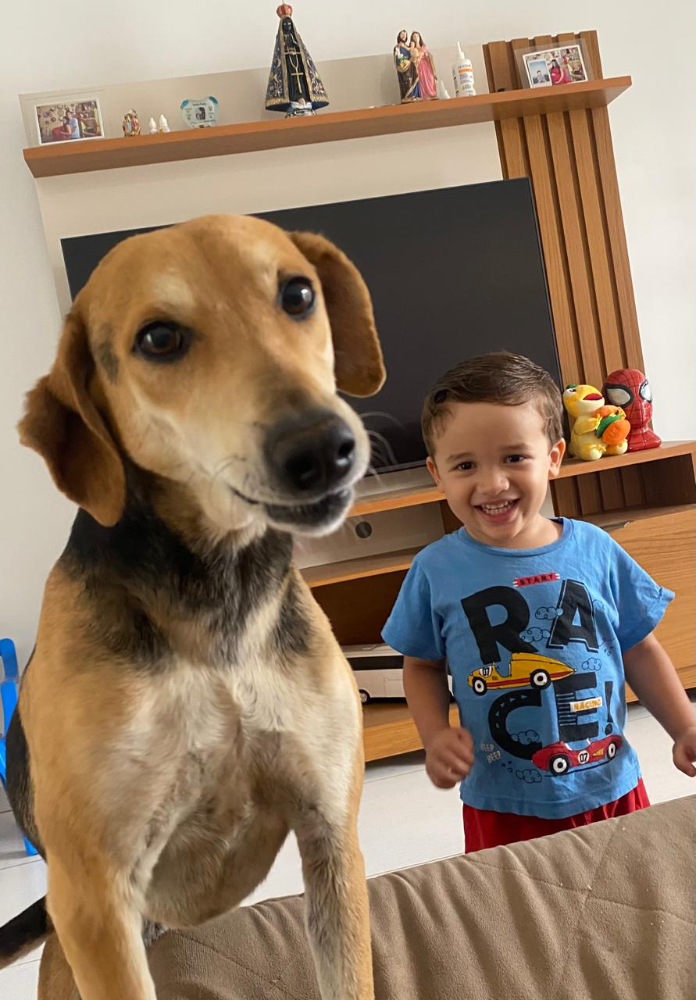
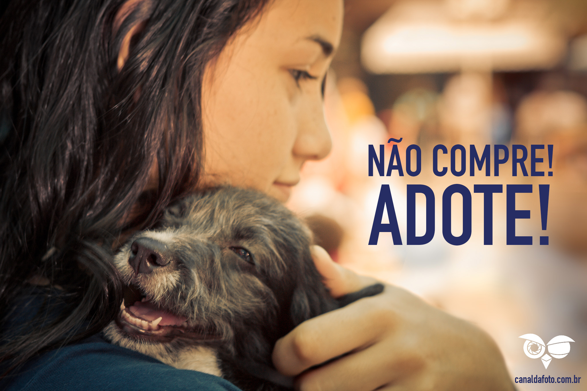

Quem Somos
A ONG Patinhas Felizes atua há mais de 10 anos resgatando, cuidando e promovendo a adoção responsável de cães e gatos abandonados. Nosso trabalho é movido pelo amor e pela empatia.
Como Ajudar
Você pode contribuir sendo voluntário, fazendo doações ou apadrinhando um animalzinho. Cada ajuda transforma vidas!
